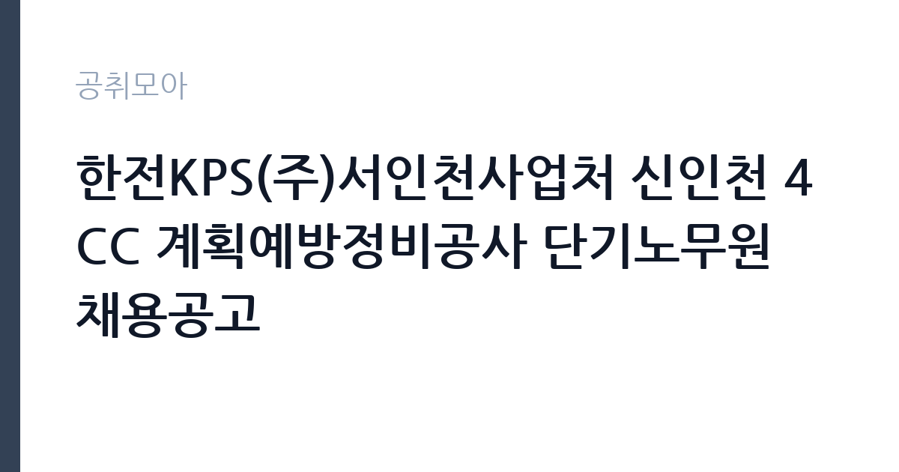

[공공기관] 한전KPS(주)서인천사업처 신인천 4CC 계획예방정비공사 단기노무원 채용공고
한전KPS(주) · 인천 · 마감 2026-11-04 (D-2) · 출처 잡알리오

한눈에 보는 모집 조건
| 기관 | 한전KPS(주) |
|---|---|
| 공고명 | 한전KPS(주)서인천사업처 신인천 4CC 계획예방정비공사 단기노무원 채용공고 |
| 고용형태 | 일용직 |
| 근무지 | 인천 |
| 게시일 | 2026-11-02 |
| 마감일 | 2026-11-04 (D-2) |
지원자격, 이렇게 읽으세요
- 채용예정일 즉시 근무 가능한자
일용·단기 근로는 정해진 사업 기간이나 단기 업무를 위해 채용되는 형태입니다. 근무 일수와 일당이 정해지고 사업 종료 시 근로관계가 끝납니다. 계절 사업이나 행사 지원, 단기 대체 인력으로 활용되는 경우가 대표적입니다. 이번 공고는 한전KPS(주)이 직접 진행하는 자체 전형입니다. 단기노무 채용은 학력과 경력 제한이 없는 경우가 대부분이지만, 현장 근무가 가능한 체력과 안전 교육 이수 여부를 확인합니다. 발전소 출입을 위해 신원조회와 보안 서약이 필요하고, 일부 작업은 관련 자격이나 교육 이수증을 요구합니다. 근무 기간과 일당, 임금 지급 방식이 공고문에 명시되므로 총 근무 일수를 함께 따져야 합니다. 응시 자격 판단이 애매하면 접수 전에 채용 담당 부서로 문의하는 편이 안전합니다. 응시 자격 판단이 애매하다면 접수 전에 채용 담당 부서로 문의하는 편이 안전합니다. 서류 제출 후에는 소명 기회가 없습니다. 자격 취득 예정자는 채용 공고의 예정자 허용 조항을 먼저 확인해야 합니다. 조항이 없으면 지원 자체가 반려될 수 있습니다. 이 공고 원문에 적힌 응시 조건 문구는 '만 18세 이상 건설업 기초안전보건교육 이수 예정자'입니다. 문구를 그대로 읽고 본인 해당 여부를 하나씩 표시해 두면 서류 단계에서 탈락하는 일을 줄일 수 있습니다.
이 공고의 포인트
이 건은 한전KPS(주)이 같은 시기에 낸 2개 모집분야 가운데 발전설비 정비 보조 직무입니다. 다른 직무 공고와 요건이 다르므로 지원 전에 모집분야 표를 대조해야 합니다. 이 공고의 첫 번째 포인트는 고용 형태입니다. 사업 기간에 맞춰 채용되므로 근무 일수와 보수가 비교적 명확합니다. 대신 다음 근무지를 별도로 구해야 합니다. 두 번째는 업무 범위가 명확하다는 점입니다. 발전설비 정비 보조 직무로 채용되므로 배치 이후 담당 업무가 크게 흔들리지 않습니다. 세 번째는 근무지입니다. 인천 지역 근무로 접근성은 좋지만 그만큼 지원자가 몰리는 지역이므로 경쟁률을 넉넉히 잡아야 합니다. 직무 특성이 분명해 본인의 경험과 맞는지 빠르게 판단할 수 있습니다. 선발 인원은 공고문에 명시되어 있으니 모집분야 항목을 함께 확인하십시오.
전형은 어떻게 진행되나
서류전형과 면접전형 외에 직무수행능력 평가가 붙는 경우가 있습니다. 평가 방식은 공고문에 구체적으로 적혀 있으므로 어떤 항목에 배점이 높은지 먼저 파악하십시오. 면접에서는 지원 동기보다 실제 업무 경험에 대한 질문이 많고, 답변의 구체성이 평가를 가릅니다. 전형 일정은 서류 마감 이후 빠르게 진행되므로 연락 가능한 번호를 정확히 기재하고 문자와 메일을 수시로 확인해야 합니다. 최종 단계에서는 결격사유 조회와 신체검사가 진행됩니다. 전형 일정이 공고문에 날짜로 명시되어 있으니 달력에 옮겨 두고 준비하십시오.
원문에서 확인한 전형 방식
○ 채용예정일 즉시 근무 가능한자 ○ 만 18세 이상 건설업 기초안전보건교육 이수 예정자 ○ 천정크레인 운전기능사 필수
이런 분께 추천해요
- 현장 작업과 육체 노동에 무리가 없는 분
- 안전 수칙과 출입 절차를 지킬 수 있는 분
- 공사 기간 중 연속 근무가 가능한 분
지원 전 체크리스트
- 응시자격 요건과 경력 기준을 충족하는가 — 경력은 증명서로 입증해야 합니다
- 근무 기간과 일당·월급 지급 방식을 확인했는가
- 제출서류 목록을 모두 준비했는가 — 누락 시 서류 단계에서 탈락합니다
- 접수 마감 2026-11-04 이전에 접수 방식을 확인해 제출했는가
모집 일정과 제출 타이밍
2026-11-02에 공고가 올라왔고 접수는 2026-11-04까지입니다. 남은 기간은 2일이며, 이 기간에 자격증 사본과 경력증명서, 주민등록등본 같은 기본 서류를 모두 준비해야 합니다. 경력증명서는 발급에 며칠이 걸리는 경우가 있으니 가장 먼저 신청하십시오. 접수는 온라인과 우편·방문으로 나뉘는 경우가 많고, 우편 접수는 도착 기준으로 판정되므로 마감일 소인만 믿으면 안 됩니다. 면접 일정은 서류 발표 후 개별 통보되므로 제출 후에도 연락을 받을 수 있도록 유지해야 합니다. 공휴일이 끼어 있으면 증명서 발급이 늦어질 수 있으니 발급 일정을 앞당기십시오.
직무 이해하기: 공공기관
한전KPS는 발전설비의 정비와 운영 지원을 담당하는 한전 계열 공기업입니다. 전국 사업소에서 화력·원자력·수력 발전소의 계획예방정비와 경상정비를 수행하고, 정비 기간에는 단기 인력을 집중 채용합니다. 단기노무원은 정비 현장의 보조 업무와 안전 패트롤, 상주 감시를 맡으며 근무 기간과 일당 기준이 공고문에 명시됩니다. 원자력 사업소는 방사선 관리와 보안 절차가 특히 엄격합니다. 단기노무원은 발전설비의 계획예방정비 공사 기간에 투입되어 정비 작업을 보조하는 일입니다. 공사 현장에서 자재 운반과 장비 정리, 작업 구역 정리, 보조 작업을 맡고, 작업 전후 안전 점검과 청소를 수행합니다. 발전소 내부는 보안과 안전 규정이 엄격해 출입 절차와 작업 허가 절차를 따라야 합니다. 공사 기간이 정해져 있어 근무 일수가 명확하고, 교대나 야간 작업이 포함될 수 있습니다. 밀폐 공간이나 고소 작업은 별도 교육과 자격이 필요합니다. 이 직무는 담당 구역이 정해져 있어 근무지에 따라 실제 업무 환경이 달라집니다. 직무 교육은 입사 후 기관 자체 계획에 따라 진행되므로 사전 경험이 없어도 시작할 수 있습니다.
자기소개서 작성 팁
단기 채용은 지원서 분량이 길 필요가 없습니다. 현장 근무 경험과 안전 교육 이수 사실, 즉시 근무 가능 여부를 간결하게 쓰십시오. 지게차·크레인 같은 장비 운전 자격이 있다면 반드시 기재해야 합니다. 근무 기간 동안 결근 없이 일할 수 있다는 점을 분명히 밝히십시오. 직무 경험이 많지 않다면 경험의 양보다 과정을 구체적으로 쓰는 편이 낫습니다. 어떤 상황에서 무엇을 판단했고 어떤 결과가 나왔는지 순서대로 서술하면 신뢰가 생깁니다. 지원 동기와 기여 방안은 한 문단씩 짧게 유지하고, 가장 자신 있는 경험에 분량을 몰아주십시오. 마지막 문장은 포부보다 구체적인 실행 계획으로 끝내는 것이 좋습니다.
면접 준비 포인트
면접은 형식보다 근무 가능 여부 확인에 가깝습니다. 현장 작업 경험, 안전 수칙 준수, 야간·휴일 근무 가능 여부를 묻습니다. 위험 요소를 발견했을 때 어떻게 보고하는지 답하면 신뢰를 얻습니다. 장비 사용 경험이나 관련 교육 이수 사실을 구체적으로 밝히십시오. 마지막 질문 시간에는 근무 조건에 대한 확인 사항을 한 가지 정도 준비해 가면 성실성이 드러납니다. 면접 당일 신분증과 제출서류 원본을 요구하는 경우가 있으니 공고문의 준비물 목록을 확인하십시오.
급여·근무조건 읽는 법
알리오(공공기관 경영정보 공개시스템) 2025년 결산 경영공시 기준으로 한전KPS(주) 일반정규직 1인당 평균보수액은 8,803만원, 공시된 신입사원 초임은 4,457만원입니다. 평균보수액은 기본급에 고정수당·실적수당·성과상여금·급여성 복리후생비를 모두 합산한 값이라 월 기본급만 보고 판단하면 실제와 크게 어긋납니다. 이번 공고는 단기·일용 채용이라 위 정규직 평균보수는 적용되지 않습니다. 근무 일수와 일당 기준으로 산정되므로 공고문 처우 항목을 확인해야 합니다. 단기노무원 보수는 일당 또는 시급 기준으로 산정되고, 근무 일수에 따라 총액이 달라집니다. 연장·야간·휴일 근무에는 가산수당이 붙습니다. 2026년 적용 최저임금은 시급 10,320원, 월 환산 2,156,880원(주 40시간·209시간 기준)입니다. 고용노동부 고시 제2025-47호로 확정된 금액입니다. 공고문에 금액이 제시되지 않은 항목은 원문 보수표나 처우 설명에서 확인해야 하며 확인되지 않은 수치는 쓰지 않는 것이 원칙입니다. 비교할 때는 월 급여뿐 아니라 상여·명절휴가비·복지포인트·초과근무수당까지 포함한 연간 총액으로 계산하십시오. 기간제라면 계약 기간 동안의 총액을, 무기계약이라면 호봉 상승과 정년까지의 누적 소득을 기준으로 판단하는 편이 정확합니다.
자주 묻는 질문
- 선발 인원은 몇 명인가요?
공고문의 모집분야 항목에 직종별 인원이 표로 제시되어 있습니다. 첨부된 공고문 원문에서 확인하십시오. - 근무지는 어디인가요?
인천 지역의 한전KPS(주) 소속 근무지입니다. 세부 주소와 출퇴근 조건은 원문 공고문에서 확인할 수 있습니다. - 보수는 얼마인가요?
채용 신분(일용·단기)과 기관 임금 규정에 따라 정해지며 구체적인 금액은 공고문 처우 항목에 제시됩니다. 금액이 공개되지 않은 경우에는 원문의 보수표를 확인하십시오.
함께 보면 좋은 공고
[공공기관] 2026년 한국특허정보원 체험형 청년인턴 채용 — 마감 2026-11-18[공공기관] 한국폴리텍대학 진주캠퍼스 행정지원직(사무직원 휴직 대체인력) 채용 공고 — 마감 2026-11-10[공공기관] 대구경북첨단의료산업진흥재단 2026년 3차 정원외 계약직원 채용공 — 마감 2026-11-17출처: 잡알리오 공개정보를 바탕으로 공취모아가 정리한 안내글입니다. 모집 조건·일정은 변경될 수 있으니 지원 전 반드시 원문 공고문을 확인하세요. 본 글은 정보 제공용이며 합격을 보장하지 않습니다.